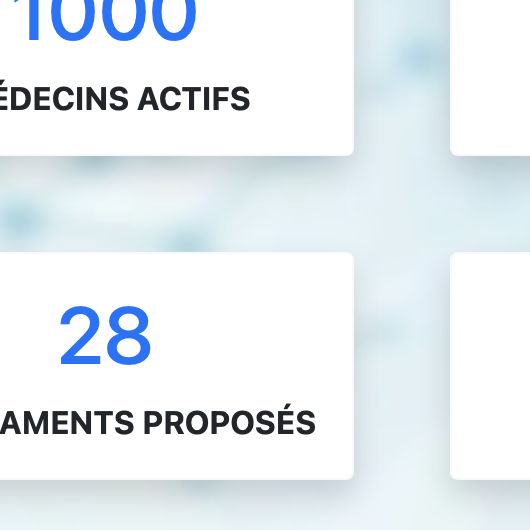

 Ce site web était basé sur la méthode MVC (Modèle Vue Controleur).
Le pattern MVC permet de bien organiser son code source. Il va vous aider à savoir quels fichiers créer, mais surtout à définir leur rôle. Le but de MVC est justement de séparer la logique du code en trois parties que l'on retrouve dans des fichiers distincts.
Pour ce projet un thème précis était demandé. L'objectif demandé était de créer un site Internet pharmaceutique, afin de pouvoir gérer sur un compte (avec nom d'utilisateur et mot de passe), des rapports de visiteurs effectuant des visites médicales. L'ajout, la modification et la recherche d'un rapport y étaient donc possibles. Une visualisation des médicaments et des médecins avec la possibilité de les rechercher par noms est également inclus.
Afin de procéder à la création de ce site, j'ai d'abord mis en place :